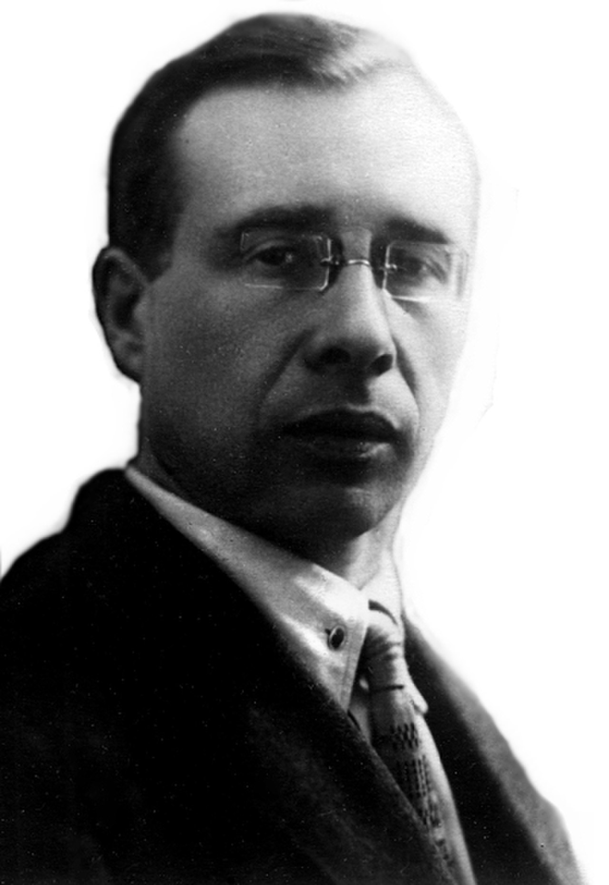
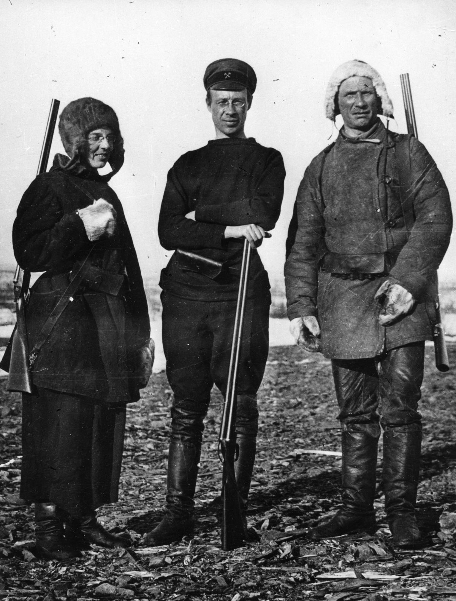
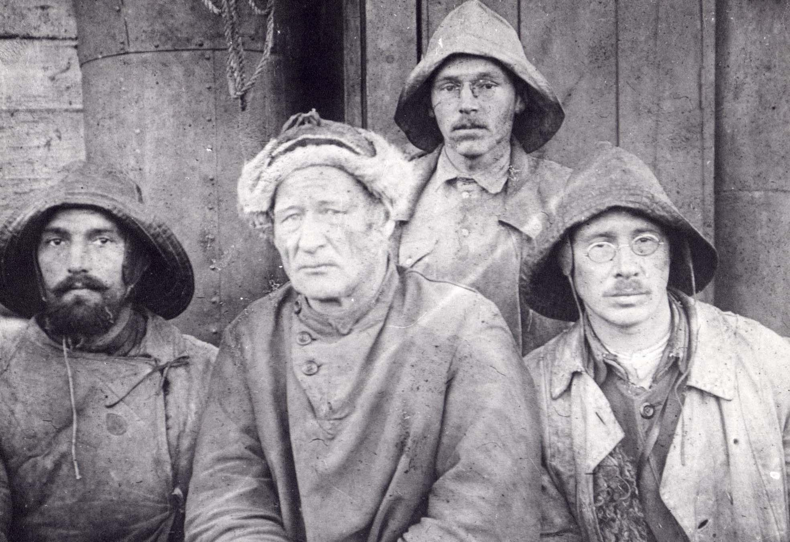
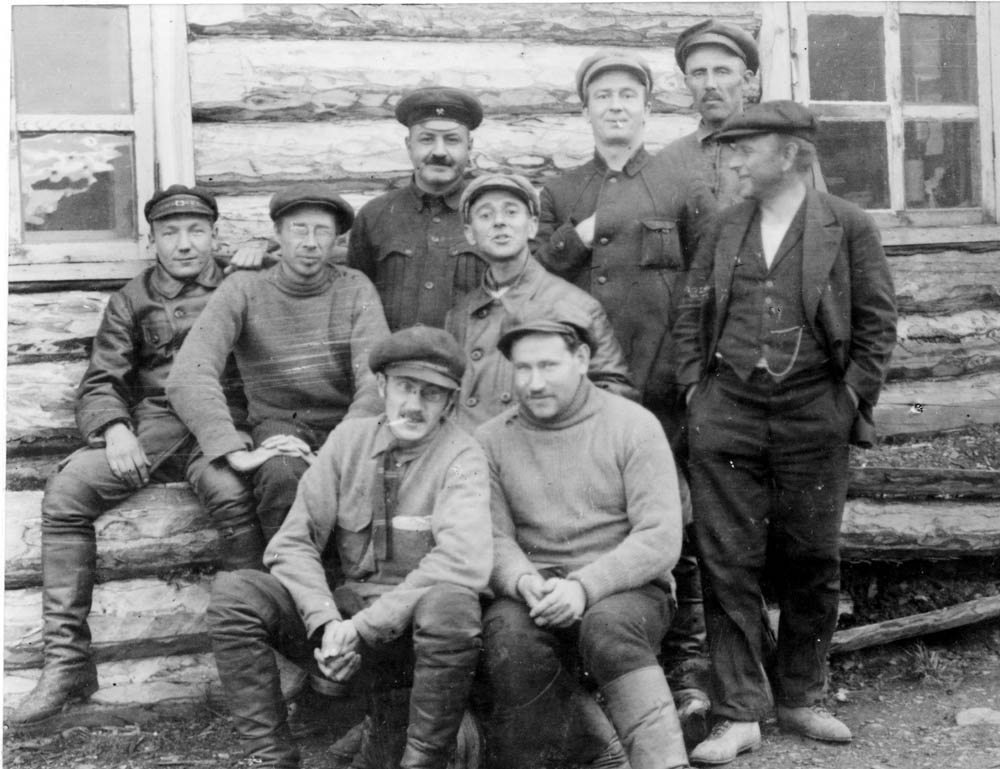
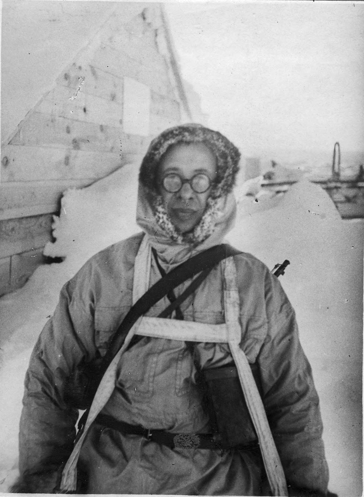
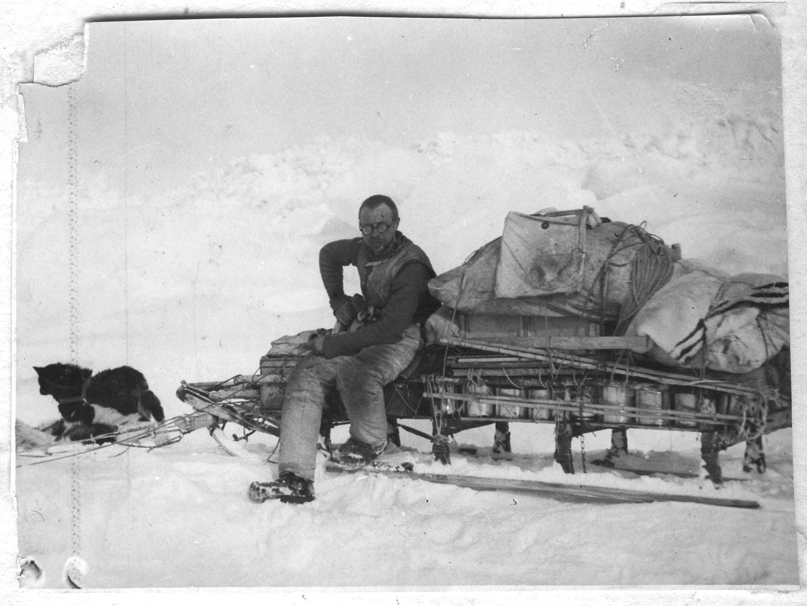
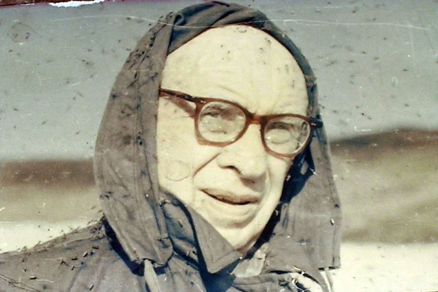
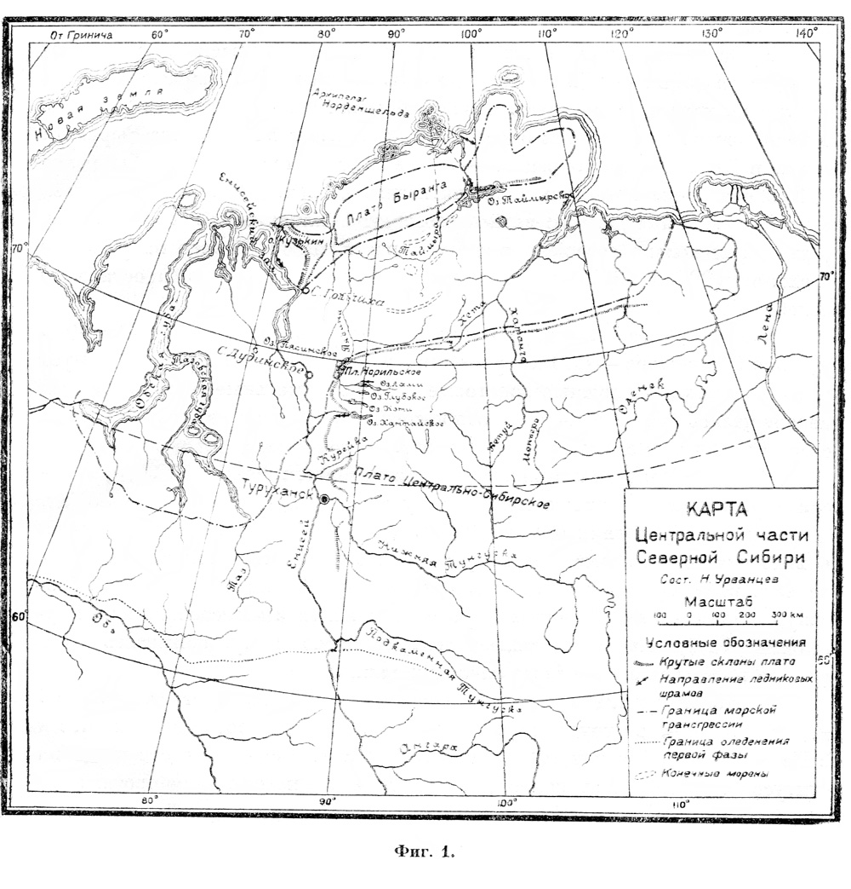
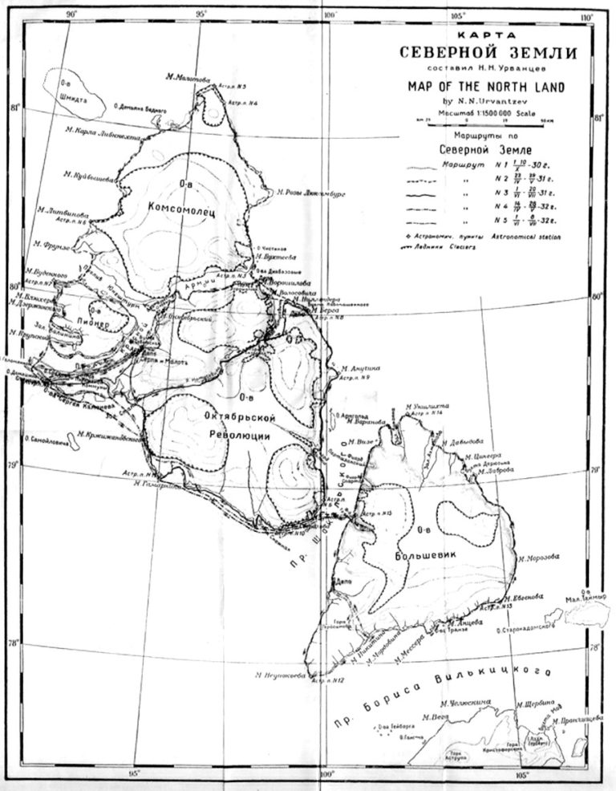
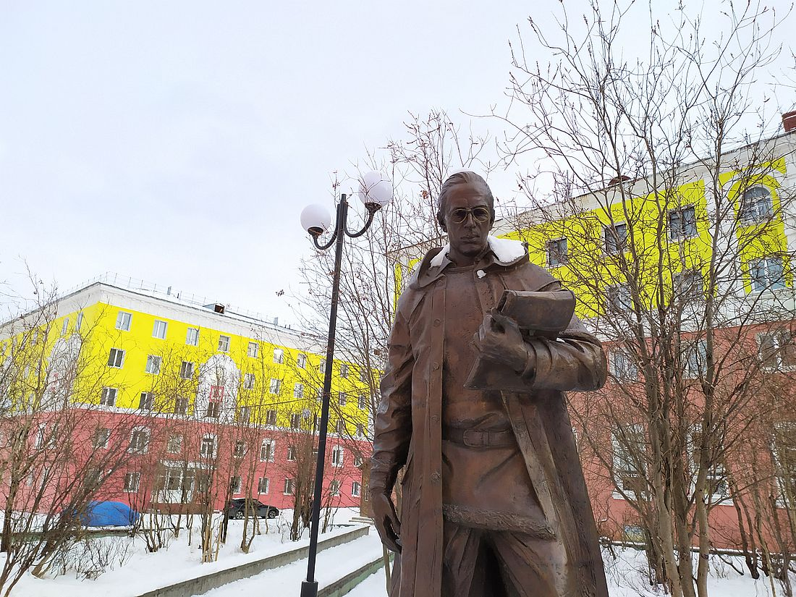

Урванцев Николай Николаевич
Главное
 Николай Николаевич Урванцев(1893—1985) — исследователь Арктики, доктор геолого- минералогических наук, заслуженный деятель науки и техники РСФСР. Автор многих научных трудов, главные из которых посвящены исследованию геологии Таймыра, Северной Земли и севера Сибирской платформы.
Биография
Николай Николаевич Урванцев родился 29 (17) января 1893 года в городе Лукоянове Нижегородской губернии, в небогатой купеческой семье. С детства он много читал — у отца была хорошая библиотека, увлекался геологией и рассказами об исследователях Арктики. В 1907 году отец разорился и стал работать по найму приказчиком. В 1903 году Николай Урванцев поступил в Нижегородское реальное училище, которое окончил в 1911 году. После окончания училища Николай Урванцев поступил на механическое отделение Томского технологического института; под влиянием лекций профессора В. А. Обручева и его книг «Плутония» и «Земля Санникова» позже он перевелся на горное отделение.Окончив по первому разряду институт в 1918 году, когда в стране шла гражданская война, поступил на работу в Сибирский геологический комитет.В 1919г. Сибгеолком направляет Н.Н.Урванцева в район Енисейского Севера на поиски месторождений каменного угля. И он открывает и прослеживает на территории два угольных пласта рабочей мощности. Это было, как теперь принято говорить, открытие особой государственной значимости - решение острейшей проблемы обеспечения местным углем приходящих в устье Оби и Енисея морских и речных судов, которые были вынуждены до 30% своего тоннажа загружать углем для обратного рейса. “Район Норильска, пишет Н.Н.Урванцев, представлял в то время совершенно пустынное место... У подножья горы Рудной виднелись обвалившиеся устья двух штолен, а несколько севернее - развалины заводика Сотникова 1868г., куски древесного и каменного угля, куски выплавленной меди и медистых сланцев.
В 1920г. Н.Н.Урванцев совершает одно из самых главных, если не
самое главное дело своей жизни, он открывает месторождение Норильск-I - две шлиры медно-никелевых руд на северном
склоне горы Рудной. Содержание меди в рудах составило 1,5% , а никеля -1 % . Это для условий глухого Заполярья -
далеко не очень высокие содержания. Но Урванцев уже тогда был настоящим ученым, блестяще владеющим методом аналогий,
и он проводит параллель с хорошо известным месторождением Садбери в Канаде и через выдающегося платиниста Н.К.Высоцкого
передает образцы в Горный Институт в Петрограде для исследований на платиновые металлы. Но лаборатория не работает и
нужно ждать. А ждать, ничего не делая, Николай Николаевич не мог и в те далекие двадцатые годы. Он решает изучить
водный путь из р.Норилки через оз.Пясино и по р.Пясине до устья.
В 1922г. Н.Н.Урванцев, Н.А.Бегичев и еще два человека выполнили это исследование. Велись съемки берегов и реки в
масштабе 1:100 000, геологические наблюдения, промеры глубин фарватера, измерения скорости течения и т.д.
 Участники экспедиции обратили внимание, что река совершенно пустынна, но по берегам отмечались развалины изб и даже целых поселков, свидетельствовавших о том, что река Пясина была населена. Особенно крупный поселок, судя по многочисленным развалинам изб и крестам кладбища, располагался в устье р.Дудыпты по древнему Пясинско-Хатангскому водному пути. Это место и сейчас носит название “Кресты” . Выйдя из устья в море, маленький отряд ушел затем под парусами на о.Диксон, куда прибыл в середине августа. По пути на Диксон, на побережье восточнее устья р.Убойной партией были найдены научные материалы, посланные Амундсеном в 1918г. с зимовки на судне “Мод” у восточных берегов Таймыра. Почта была отправлена в Норвегию с двумя участниками экспедиции Кнутсеном и Тессемом, но оба исчезли в пути. Поисковая партия Н.А.Бегичева, организованная весной 1921г., нашла остячки одного из них в районе мыса Бильда, в самом начале их пути. Ни почты, ни второго спутника тогда обнаружить не удалось. Найденная в 1922г. почта была передана правительству Норвегии. Н.Н.Урванцев и Н.А.Бегичев за это были награждены Норвежским правительством золотыми часами.
Пока совершалось это путешествие, в норильской руде инженером Подкопаевым были обнаружены более высокие, чем в канадских, содержания платиновых металлов. Несмотря на труднодоступность и удалённость района Высший Совет народного хозяйства,полностью согласился с доводами молодого убежденного ученого и принял решение работы не только продолжить, но и расширить И уже в 1925г. экспедиция из 150 человек под научным руководством Урванцева была направлена в Норильский район для изучения его рудоносности.Результатом экспедиции стало открытие в 1926г месторождение Норильск-II. В 1928г Норильское месторождение, главную экономическую ценность которого при существующей тогда мировой конъюнктуре составляли платиноиды, передали в ведение Союззолота. Первый подсчет запасов, выполненный в 1933-1934гг. под руководством А.Е.Воронцова - миллионы тонн руды и последующее в 1935г, решение правительства о строительстве Норильского горно-металлургического комбината полностью подтвердили все геологические построения и интуицию Н.Н.Урванцева.
К этому времени относятся и многие из выдающихся географических
открытий Николая Николаевича. Сразу же после изучения бассейнов р.р.Хантайки и Таймыры, Таймырского озера и
Лено-Хатангского района он совместно с Г.А.Ушаковым возглавил Советскую Североземельскую экспедицию (1930-1932гг.).
“За пять маршрутов общим протяжением 3004,8 км определено 17 астрономических пунктов, позволивших составить надежную
топогра- фическую и геологическую карты в масштабе 7,5км=1см” - писал Н.Н.Урванцев в своей книге “На Северной Земле”
(Л.: Гидрометиздат,1969). Отдельно Николай Николаевич составил карту Северной Земли в меркаторской проекции. Эта карта
позволила ледоколу “Сибиряков” обогнуть архипелаг и совершить первое в истории плавание по Северному Ледовитому
Океану в одну навигацию. Достойной награды - орденов Ленина были удостоены Урванцев и Ушаков за Североземельскую
экспедицию.
В 1935 году учёный стал доктором геолого-минералогических наук.
В 1937 году он был назначен заместителем директора Арктического института.
С 1938-го по 1954 год Николай Николаевич, был дважды репрессирован по ложным доносам. Лагеря не смогли сломить этого мужественного человека – он продолжал заниматься любимым делом и в заключении. В 1942 году его перевели в Норильлаг. Во время заключения Урванцеву была предоставлена возможность заниматься исследованиями и даже совершить научную поездку на север Таймыра. Урванцев стал начальником геологического управления комбината, хотя по-прежнему числился заключенным. Урванцев был освобождён из лагеря в 1945 году однако в Норильске он прожил до 1956 года. После возвращения в Ленинград Урванцев приступил к работе в Научно-исследовательском институте геологии Арктики. После выхода на пенсию (в 1958—1967 годах) работал в Ленинграде в НИИГА. 29 апреля 1963 года, в связи с 70-летием, был награждён вторым орденом Ленина. Скончался в Ленинграде 20 февраля 1985 года.Урна с прахом учёного, в соответствии с его завещанием, была захоронена в Норильске. В поисках полезных ископаемых этот удивительный человек прошел более 20 тысяч километров. История его жизни легла в основу фильма ≪Сибирью очарованные≫. Его именем названы мыс и бухта на острове Оленьем в Карском море, скала в горах Королевы Мод в Антарктиде,аэропорт города Норильска, минерал урванцевит.
Достижения


 Геологическое и географическое исследование
полуострова Таймыр, результатом которого стало открытие крупнейшего медно-никелевого месторождения с повышенным содержанием
платеноидов и редкоземельных металлов и обновлённая карта полуострова Таймыр.
Геологическое и географическое исследование Северной земли и создание первой карты этого архипелага
Основал один из крупнейших городов за Полярным кругом - город Норильск